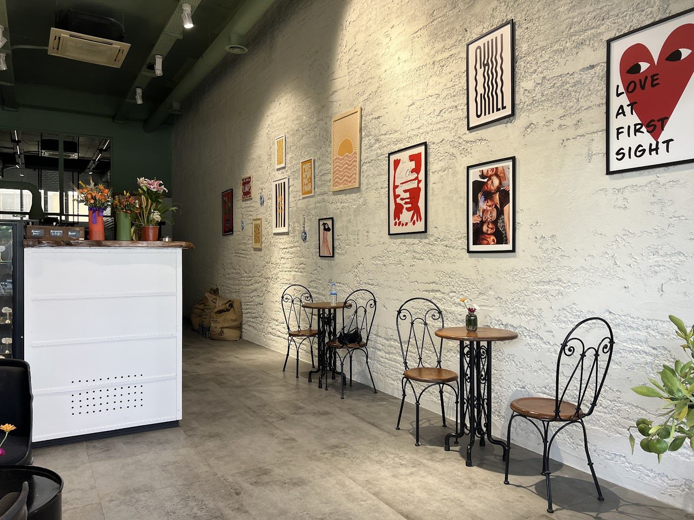
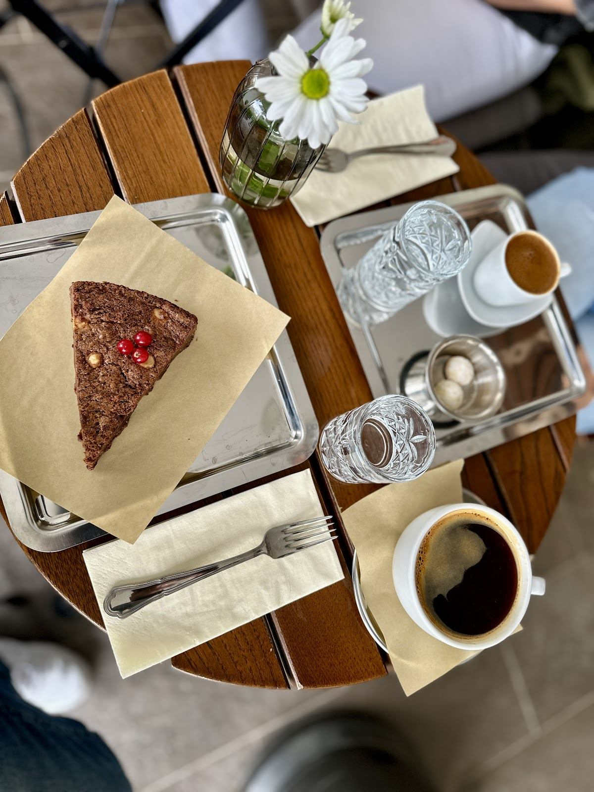

Kahve molası
Tek başınıza dinlenmek ya da arkadaşınızla sohbet etmek için bir fincanlık ara.
Sinanoba, Büyükçekmece
İbrahimzade Caddesi’nde kısa bir ara. Masanıza kahve ve tatlılar gelsin, sohbet kendiliğinden uzasın.
Yuzu’ya bir göz atın ↓

Masanıza eşlik edenler
Tek başınıza dinlenmek ya da arkadaşınızla sohbet etmek için bir fincanlık ara.
Vitrinden bir tatlı seçin, kahvenizin yanına ekleyin.
Güncel seçenekler, fiyatlar ve alerjen bilgisi için resmî hesabımızdan bilgi alabilirsiniz.
Misafirlerimizin gözünden
“Sandviçleri ve matchaları çok güzel ve kaliteli. Ortamı da çok tatlı.”Pınar KurtuluşYorumu Google’da okuyun ↗
“Tekrar uğrayacağım bir mekan, umarım bol kazançlarınız olur.”NurseliYorumu Google’da okuyun ↗
“Çay ve banana bread çok güzeldi.”Can KurtuluşYorumu Google’da okuyun ↗
Google yorumlarından kısa alıntılar. Puan ve yorum sayısı 2 Kasım 2026 tarihinde kontrol edilmiştir.
Her gün 11.00 – 23.00
Saatler resmî Instagram profilinde belirtilmiştir. Özel günlerde ziyaret öncesi bilgi alabilirsiniz.